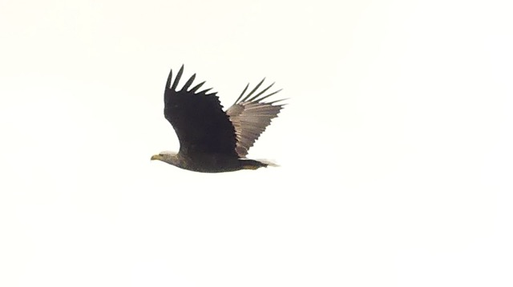
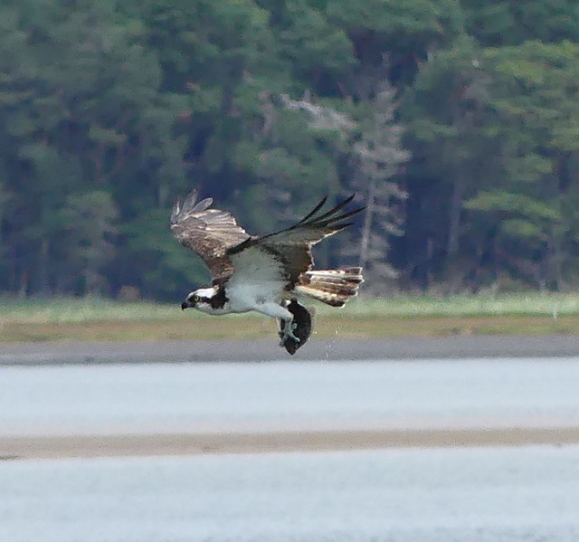

Home Page > Blog > Walks and the outdoors
Magnificent birds in Northern Scotland
19th July 2024
Please excuse the lack of characteristic witty journalism in the following article, as I wish to quickly share some images of quite magnificent birds seen recently on a trip to Northern Scotland.
 A white-tailed sea eagle seen in Shieldaig, Torridon. The eagles nest on an island in the loch, and frequently fly out to feed their young.
 Loch Fleet is perhaps best known for its seal population, but an osprey can be a common sight there too! This one caught a fish then gave a very impressive display.
 The peregrine (also at Loch Fleet) was rather high up but could still be seen quite clearly. They are known for their speed of flight and this one certainly didn't disappoint.
The peregrine (also at Loch Fleet) was rather high up but could still be seen quite clearly. They are known for their speed of flight and this one certainly didn't disappoint.
Housekeeping
Normal service will resume soon - I am taking a short summer break from writing blogs but am currently working on one about how read receipts may cause more stress than certainty in digital communication. I am now also trialling Mastodon, further details of which may be found on the contact page.